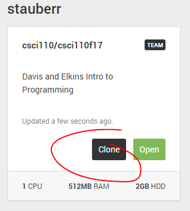
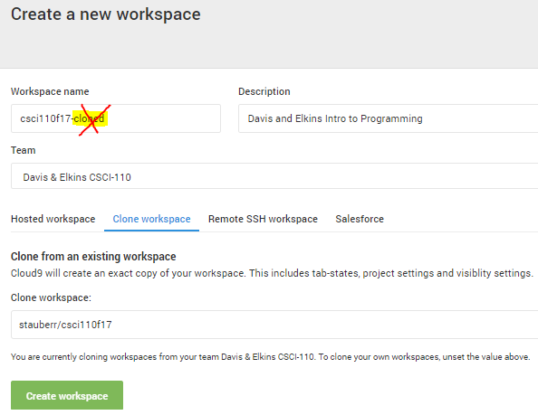
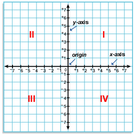
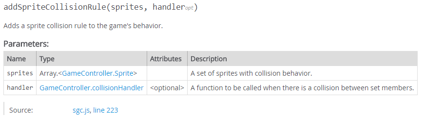
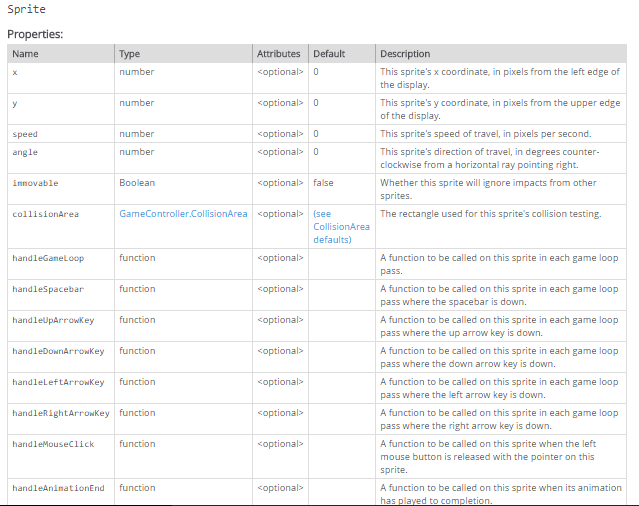

Welcome to the first tutorial for the course!
This document has two different kinds of content: general information and action steps.
General information appears in ordinary unlabeled text, like this sentence. This form of content will be used to introduce and explain new concepts.
For action steps, carry out the instructions and mark the checkbox! This helps me figure out where you are in the process should you have questions, and hopefully will help you avoid skipping steps by accident.
Complete the assignment at the end of the tutorial and submit it electronically on Sakai using the Assignments tab.
We will be using a framework for desktop and mobile browser games called Phaser (https://phaser.io). In order to facilitate our interactions with this framework, Prof Mattingly created an Application Programming Interface (API) called sgc.js (stands for "Simple Game Controller") that has a set of defined functions for interfacing with Phaser. These functions mirror similar ones on other popular game engines such as Gamemaker.
Working from a virtual machine in the cloud (c9), we will create Javascript programs that run in a browser. For example, our first game will be called Stranger Hunt, so we could create a Javascript file called strangerhunt.js to run it. You will need to create a personal account for the Cloud9 virtual workspace (see below).
We provide (or you can write, if you wish) a simple hyper-text mark-up language (HTML) file that calls the phaser script, and then calls the sgc script, and finally our specific game script.
This sounds complicated, but in practice it amounts to writing some Javascript code in the C9 development environment, and viewing the output in a web browser. The beauty of it is you can give anyone in the world with an internet connection the address of this webpage and they can use your application (i.e. play your game) on any platform with no additional software required.1
Cloud9 (c9) combines an online code editor with a workspace in the cloud. It supports over 40 languages including Javascript, which we will be using. You should have received an email inviting you to sign up for a c9 account. If not, let me know and I will send you one. You can sign up without an invitation, but accepting my invitation will keep you from having to give c9 a credit card number.
Go to https://c9.io/ and provide:
On the "tell us about yourself" screen, choose "Student," and "Coursework"
Once your account is created, open the csci110 workspace and create a clone with the name csci110. It is important that you choose this name so that our customization works correctly.

Remove the -cloned from the Workspace name, add -YOURNAME and hit the 'Create Workspace' button at the bottom.
Our tutorials will be populated with characters from the Computational Fairy Tales kingdom created by Jeremy Kubica at http://computationaltales.blogspot.com. You are about to meet three of them.
Princess Ann is the central character of these tales. She is the daughter of King Fredrick and heir to the throne. She was tasked by the prophets to rescue the kingdom from the coming darkness. Unfortunately, the prophecy was vague about the details of the threat facing the kingdom. Thus, she is on a quest to determine what the threat is and how to stop it.
Marcus is a powerful wizard who is constantly looking for magical solutions to everyday problems. His approach to spells can teach you a lot about computational thinking and the art of computer programming.
The third character is a mysterious stranger in a dark cloak. Are his spells powerful enough to defeat Marcus? What does he have to do with the prophecy of coming darkness?
You are about to build a simple game that will introduce you to the basics of running a javascript program from Cloud9.
In this game, our three characters will move about inside a room enclosed by stone walls.
As the player, you will score points by casting a spell on the mysterious stranger. (You will cast a spell with a mouse click.)
Be careful! By accidentally casting the spell on Marcus, you will lose points.
Worse still, casting the spell on Princess Ann, who has no magical protection, will end the game.
First we will create a valid but do-nothing game, just a background and a score board.
Open a web browser and go to https://c9.io
Login and open your csci110 personal workspace.
In the left margin you will notice a "Workspace" tab that contains a directory tree of the tutorials.
Expand the 1.strangerHunt folder by clicking on the arrow or double-clicking the folder.
In the 1.strangerHunt folder you should see some .png files, a .html file, and a .js file.
Double click the StrangerHunt.js file and type this in the editor window
gameController.backgroundImageFile = 'floor.png';gameController.showScore = true;gameController.startGame();Some explanations are in order. gameController is an object defined in sgc that has several properties and methods. These concepts are well illustrated with the car object in this w3schools tutorial. Unless you are already familiar with JavaScript objects and how to define and access them, please look at the tutorial before continuing.
Read the w3schools tutorial about objects (https://www.w3schools.com/js/js_objects.asp)
All we are doing with these three lines is assigning values to two gameController properties (backgroundImageFile and showScore), and invoking ('calling') a gameController method namedstartGame(). From now on I will refer to these properties and methods without the gameController identifier (the name of the object), but remember to always include it in your code!
Open the strangerHunt.html file and hit the green arrow to 'Run' it. Alternatively, you can right click the html file without opening it, and select 'Run' from the right-click menu. You will see a status window appear below the editor window, with a statement that looks like this:
Starting Apache httpd, serving https://csci110-your_user_name.c9users.io/tutorials/1.strangerHunt/strangerHunt.html.
Select the link in your c9 window (hover or left click) then choose Open in the menu that appears. A new window will open with the floor.png image and the score block.
Congratulations! First steps are the hardest; now you know how to enter Javascript code and make your application run in any browser window.
Next we will add a character that just runs off the screen.
A sprite is a graphic image that can be drawn on the screen.
Windows and Microsoft Office both come with tools for creating sprites from scratch, by hand (Paint and Photo Editor), and there are several powerful and free image-editing programs such as GIMP and IrfanView. However, it is often more convenient to import existing image files.
There are several images already loaded in your StrangerHunt folder, but let's get some more.
Open Sakai, got to the Resources tab of your Power Up class site, and look for a folder called "Sprites for Stranger Hunt".
Click on marcus.png. In the new tab that appears, right click the image and select Save As. Pick a location of your choosing (but don't forget where you put it!)
Near the left of the menu bar in the Cloud9 window, go to File -> Upload Local Files, and drag your marcus.png file into the dialogue window or manually select the file location.
Repeat the steps above to get the Stranger sprite
Before we use them in our web-page, we have to pre-load these images with the preloadImages() method. For stylistic reasons, you may prefer to do all your preloading at the top of your JavaScript program..
Type this line somewhere before the call to startGame().
xxxxxxxxxx gameController.preloadImages('princess.png', 'marcus.png', 'stranger.png');We are going to have to put these sprites somewhere on the screen. In order to do that we have to know something about the coordinate system we will be using.

In order to describe the position of an object in two dimensions with coordinate pairs (x,y), we first have to define an origin. The choice is an arbitrary convention, but everyone has to agree. In the case of any type of window including your browser window, the convention is to use the upper left hand corner as the origin. That means we will be working in Quadrant IV in the above picture to describe the location of any object in the window. All we care about is the magnitude of x and y, since we know we are always staying in quadrant IV, so for simplicity, we use positive numbers for both x and y (this is another convention). Our default room size is 800 x 600 (meaning x can vary from 0 to 800, and y can vary from 0 to 600). Our default grid size is the height and width of our character sprites, which is 48. These dimensions are all in 'number of pixels" and are stored in the gameController properties displayWidth, displayHeight, and gridSize.
The direction is indicated with a counter-clockwise angle measurement from the positive x axis. For example; straight up is 90 degrees, left is 180 degrees, down is 270 degrees and so on.
But what is a pixel?
Javascript uses an "object-oriented" programming style. This means that the programming is organized by defining the behavior of various objects within the game.
Let's declare and create an object called princess, with the following object literal.
Type this in your strangerHunt.js file, somewhere before the call to the startGame() method:
xxxxxxxxxxlet princess = { name: 'Princess Ann', imageFile: 'princess.png', x: 300, // pixels to right of upper-left corner y: 300, // pixels below upper-left corner speed: 200, // pixels per second angle: 45, // degrees counter-clockwise from horizontal ray pointing right};let is a JavaScript keyword we can use to define variables. Princess is an object with 6 properties. We assign values to each property with the colon operator during creation. Afterwards we can use the = operator (which means "gets" in the sense of "is assigned the value of"). For example, if we want to change the value of the x property from 300 to 350, we can write princess.x = 350.
Notice the // marks with words after them? These are comments which are ignored by the web browser, but serve to make our code more understandable to others and ourselves, which is particularly useful when something goes wrong! Get into the habit of using comments; the bigger your programs get the more essential this becomes.
Before we start the game, we need to tell the controller what objects are in the game. This is done with the addSprite() method by making the princess object an argument of the method like this:
xxxxxxxxxxgameController.addSprite(princess);Add the above method call to your js script, somewhere after princess has been defined, and before the call to startGame().
An argument of a method is the value passed to that method by putting it in parentheses after the method name. For more about arguments see https://www.w3schools.com/js/js_function_parameters.asp .
Using the previous steps as a guide, add stranger and marcus objects. Give marcus a speed of 100, and stranger a speed of 300. Give them x and y coordinates so that they are within the display area and not on top of each other. They can all have different angle properties.
Test your game by running the strangerHunt.html script as before.
We have some vertical and horizontal wall sprites in our strangerHunt folder; let's add them to the window to make an enclosed room. The top wall is easy:
xxxxxxxxxxlet topWall = { imageFile: 'horizontalWall.png', x: 0, y: 0, immovable: true};gameController.addSprite(topWall);The position of a sprite is determined by the sprite's origin, which is (as you probably guessed) is the upper left corner of the sprite. The question is, what x and y values should we use for the other walls?
To position the bottom wall, we might be tempted to set x to 0 and y to 600 (since we know the default room height is 600). However this would put the upper left hand corner of the sprite at the bottom edge of the window so none of the sprite would be visible! That means we have to back up by the width of the sprite, which is 48 pixels. To make our code more understandable, if somewhat slower, we could set y to (600 - 48). This would evaluate to 552 at run-time and keeps us from having to do the math. 😏 But what happens if we change the default room width? Or if we decide we need 32-pixel wide sprites instead of 48? We would have to change all of our wall x and y positions in the code manually, which is not very efficient. Instead, let's use the sgc gamecontroller properties displayHeight, displayWidth, and gridSize to automate this process for us. For example, here is how we might declare the right-hand wall:
xxxxxxxxxxlet rightWall = { imageFile: 'verticalWall.png', x: gameController.displayWidth - gameController.gridSize, y: gameController.gridSize, immovable: true};The last property (immovable) is used by sgc's collision handler and we will see how that comes into play shortly.
Add the rightWall code to your strangerHunt file. Also don't forget to add a method call to addSprite(rightWall), and preload the verticalWall.png image with preloadImages()! HINT: just add rightWall.png to the list of arguments.
Now do the same for the left and bottom walls
Test your game. You should have a room with 4 walls, and three characters flying straight through the walls.
So far we have seen how objects are holders for properties and methods. As you might remember from the example with the car object, these properties can be different kinds of things. Arrays are holders of the same kind of things. For example, an array can be a set of numbers, or a set of colors, but not a collection of numbers and colors!
Most programming languages including javascript designate arrays with square brackets. For example, we could declare an array called "allSprites" and fill it with a set of sprites like this:
xxxxxxxxxxlet allSprites = [princess, marcus, stranger, topWall, bottomWall, leftWall, rightWall];Add this declaration statement to your code, after the associated objects have been created.
We will need this array to define collision rules for our walls and characters.
The Simple Game Controller includes a method that will tell it which sprites it should do collision-checking for. The default behavior is to bounce off, but you could have it do something else that you define with your own event handler method (like having it blow up!). For now we just want the characters to bounce off the walls, and each other. Here is the documentation of the collision method:

Add the following line to your code, after you declare the allSprites array, and before the call to startGame()
xxxxxxxxxxgameController.addSpriteCollisionRule(allSprites);Run your program to make sure the princess, marcus and the stranger sprites bounce off the walls and each other, and that the walls do not move.
Remember way back in the game design section we said that the player scores points by "casting a spell" (i.e. clicking) on the mysterious stranger, and loses points by hitting Marcus. Let's see if sgc has a sprite property or method we can use to interact with the mouse:

Yes! It looks like handleMouseClick will do what we need. Now we must define the method we want to invoke when a mouse button release on the sprite is detected. By the way you can see the whole sgc reference here.
The gameController property that holds the score is called score strangely enough. To raise the score by 10 points we will use an assignment statement that will seem very odd to you if you know anything about math:
xxxxxxxxxxgameController.score = gameController.score + 10;How is this possible?! If that were a mathematical equation, there would be no solutions to it. That is why we like to say the word "gets" instead of "equals" when we use the = sign operator. This line says the score property "gets" (as in "is assigned the value of") ten more than the current value of score. You can read more about mathematical operators here.
Add this function definition to your stranger object literal:
xxxxxxxxxx handleMouseClick: function() { gameController.score = gameController.score + 10; }(It needs to be inside the curly brackets that define thestranger object.)
Using the previous step as a guide, add a Mouse click handler for Marcus, except reduce the score by 10.
Add a mouse click handler for Princess Ann that ends the game using thegameController.endGame()method.
Run your game and test that you can raise and lower the score, and end the game, by clicking on the appropriate sprite.
Congratulations! We almost have something that could be called a game, except it is not very interesting. Let's add some spice to it by introducing random behavior: Instead of always starting the characters in the same place with the same initial direction, we will give them a random starting location somewhere in the room, and a random starting direction. In addition, to make things slightly more challenging for the player, we will have the stranger teleport to a different location and speed up every time he gets hit by a spell. To do this we will use a Math method called random() and define some variables that limit the randomness to the confines of the room.
Declare two variables that define the width and length of the room (not counting the walls). It is good practice to declare your variables near the top the top of the JavaScript program since we want to declare them before they get used.
xxxxxxxxxxlet floorWidth = gameController.displayWidth - 3 * gameController.gridSize;let floorHeight = gameController.displayHeight - 3 * gameController.gridSize;We don't want the characters randomly appearing in the walls, so we just subtract the width of the wall on each side from the display dimensions, and subtract an additional sprite width to account for the sprite origin being in the upper left corner of the sprite. For a coordinate to be valid, in the context of our game, it would have to lie within the confines of the display area, and also within the confines of the walls.
The Math object is built into JavaScript and allows you to perform mathematical tasks. One of these tasks is a random number generator. The Math.random() method generates a number between 0 and 1 (including 0 but not 1). To get a random (but valid) x coordinate, all we have to do is multiply this random number by the value of floorWidth, and add the width of a sprite.
Replace the x assignment of each character sprite with
xxxxxxxxxx x: gameController.gridSize + Math.random() * floorWidth,Using the previous step as a guide, modify the y assignment of each sprite.
Using the Math.random() method, replace the angle property assignment of each sprite with an expression that generates a random angle between 0 and 360.
In JavaScript, this is the object that "owns" the method we are executing. It refers to (or you could say, "it's value is") the method's object. Inside our event handler methods, we will use this to modify three properties of the object whose method it is.
Add this code to the function definition for the mouse-click handler of the stranger object
xxxxxxxxxx this.speed = this.speed * 1.1; this.x = gameController.gridSize + Math.random() * floorWidth; this.y = gameController.gridSize + Math.random() * floorHeight;In this case, this refers to stranger.
Using the previous steps as a guide, program the same behavior for Marcus. Does anything have to change?
Test your program and verify that:
This completes the first game tutorial. If there are any things that aren't working right in your program, please see one of the instructors before submitting your work.
Upload your completed strangerHunt.js file to the assignments tab of Sakai. I will be running the game in your c9 workspace, so it is important that you not delete this file in c9 before it gets graded.
Complete the quiz for Stranger Hunt in the Tests and Quizzes tab of Sakai.
Project work minimum requirements (upload to Assignments tab of Sakai)
Make your own sprite using the graphics editor of your choice.
Download a background image file, or create one of your own. Resize as necessary to fit in the default window.
Write a JavaScript program that loads the background image and places your sprite on it. You will need to create a new .js file to do this (right-click the 1.strangerHunt folder in the Workspace tab and select New File, then type MyAwesomeGame.js or whatever else you want to call it!2 )